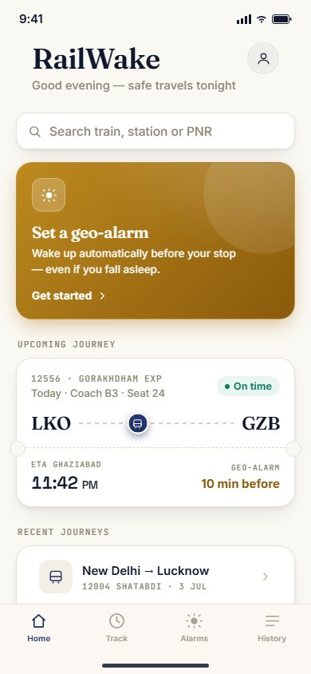
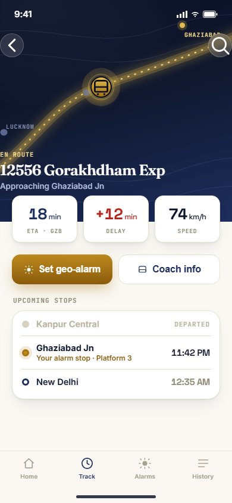
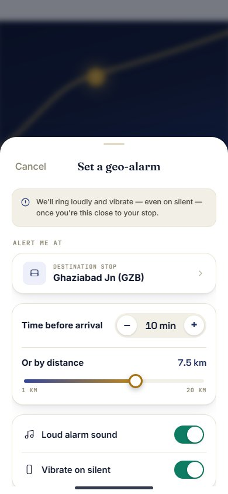
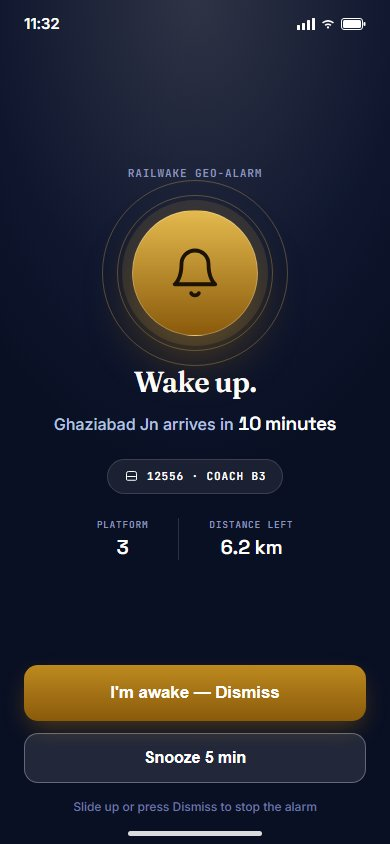
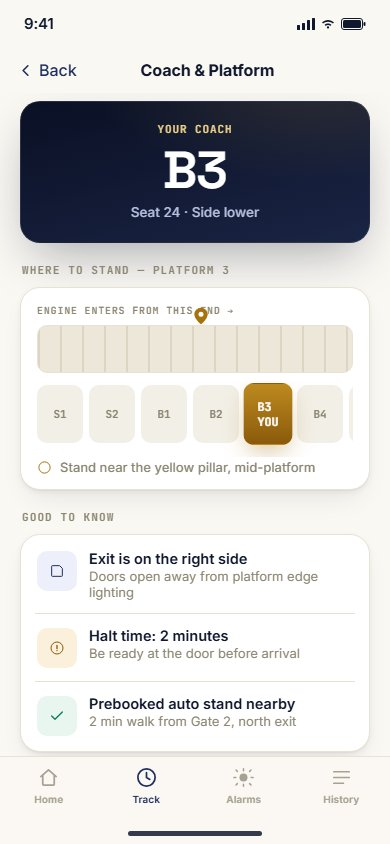
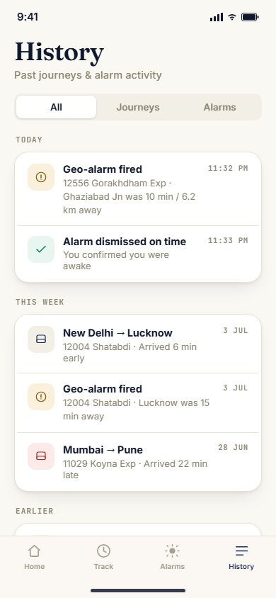

India's live train-tracking apps ("Where is my Train" and its clones) are functional but stressful to use half-asleep: dense data-dumps, ad clutter, and a map you have to keep manually checking. The real failure mode isn't "where is the train" — it's falling asleep on a long overnight ride and sleeping through your stop. RailWake is a concept redesign built around a single hallmark feature: a geo-alarm that wakes you automatically when your train is a chosen distance or time from your station, so you never have to trust yourself to stay awake. Everything else — the map, the ETA, the coach diagram — is there to support that one moment of relief, not to compete with it.
A calm entry point rather than a dashboard: one search field, a boarding-pass-style card for the journey already in progress, and a standalone gold CTA for the geo-alarm — deliberately the most visually prominent element on the screen, since it's the reason the app exists.

A stylized night map (illustrated route, not real tiles) replaces the cluttered mapping widgets typical of this category. ETA, delay, and speed sit in large tabular numerals directly beneath the map so they can be read at a glance, half-conscious, without parsing a paragraph of status text.

This is the feature the whole app is built around. It opens as an iOS sheet over the live map (not a separate page) so the destination context is never lost. The core decision — how early to be woken — is offered two ways, time or distance, because "10 minutes before" and "5 km before" mean different things depending on how the train is running that day. A visible reassurance line up top ("we'll ring loudly and vibrate — even on silent") addresses the one anxiety this screen exists to solve: will it actually wake me up?

The payoff screen, styled closer to a lock-screen alert than an in-app notification: full-bleed dark surface, one glanceable headline ("Wake up."), the single fact that matters (minutes to the stop), and two unmistakably large actions. No secondary navigation, no way to accidentally dismiss it with a stray tap — a groggy commuter has to make one deliberate choice.

A problem specific to Indian long-distance rail: knowing where your coach will actually stop on the platform, in the dark, with two minutes to find it. This screen turns a mental math problem ("I'm in B3, engine enters from the north...") into a single diagram to glance at while walking toward the door.

A record of past trips and fired alarms, so a nervous first-time user can see the alarm has worked reliably before they trust it on a trip that matters. Segmented into journeys and alarms so the log stays scannable rather than becoming another feed to sift through.
